Este documento describe el uso del sistema CAM desde un telefono celular. La aplicacion conserva las mismas funciones principales de la version de escritorio, pero reorganiza la navegacion para pantallas pequenas y prioriza acciones tactiles.
En movil, el sistema cambia la barra lateral por una barra inferior con accesos directos a Inicio, Adultos, Historial, Medicamentos, Notificaciones y Salir.
En la parte superior se muestra un encabezado compacto con las iniciales del usuario, su nombre, el rol y el boton de configuracion para administrar usuarios si corresponde.
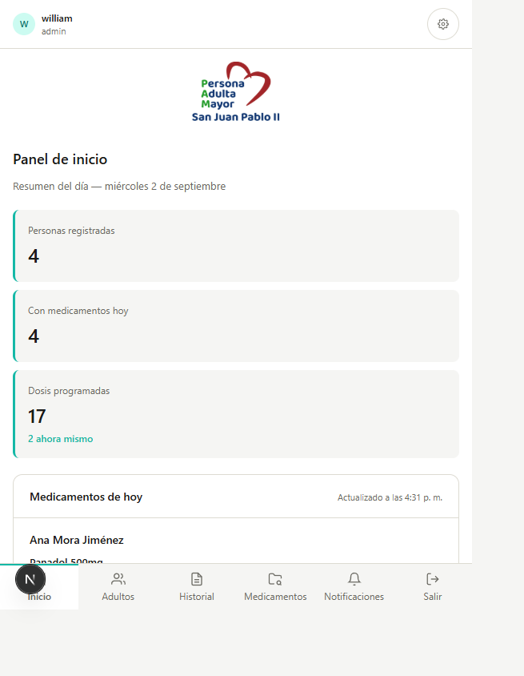
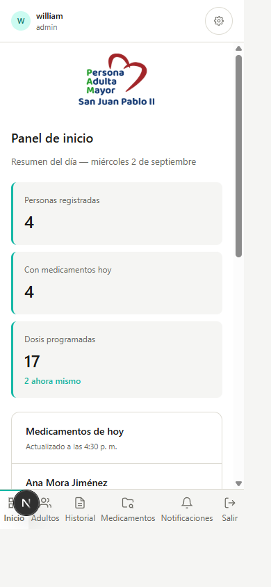
Desde la misma pantalla de acceso podes tocar "¿Olvidaste tu contraseña?" para abrir el formulario de recuperacion.
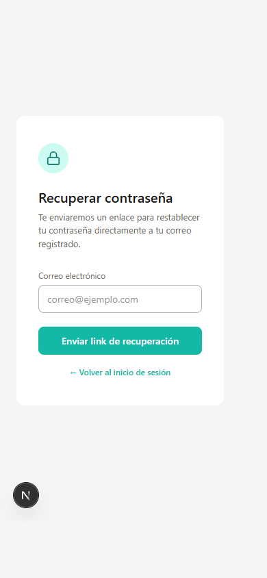
| Situacion | Comportamiento |
|---|---|
| Correo invalido o no reconocido | El sistema muestra el mensaje de error correspondiente sin salir de la pantalla. |
| Solicitud aceptada | Se informa que se envio un enlace al correo registrado. |
Despues de ingresar, el sistema abre el panel con tres metricas y el listado de medicamentos del dia.
El modulo Adultos muestra un buscador superior y luego las tarjetas de cada persona con accesos a Ver y Eliminar.
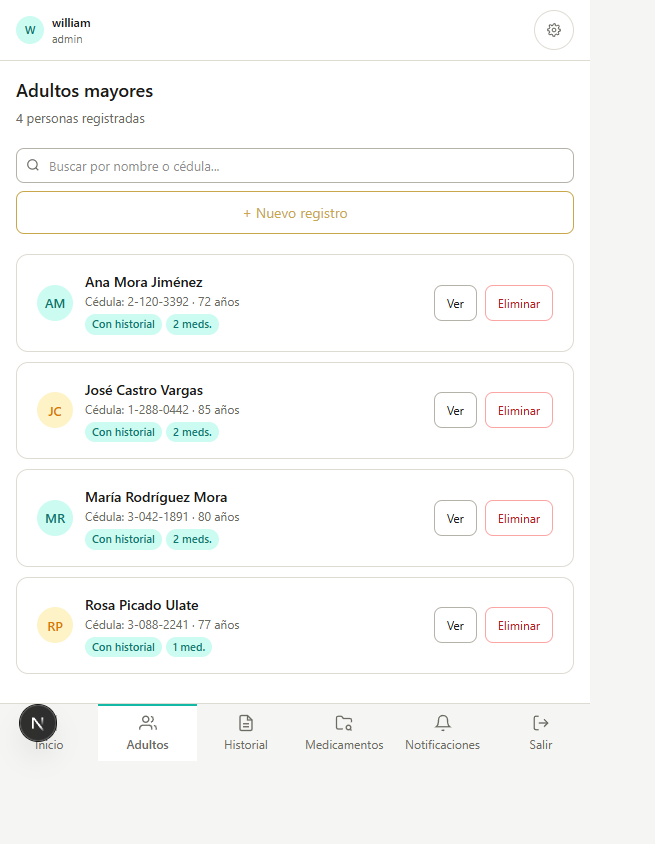
Al tocar "Ver" se abre el detalle del paciente con informacion personal, direccion, familiar solicitante y contacto de emergencia.
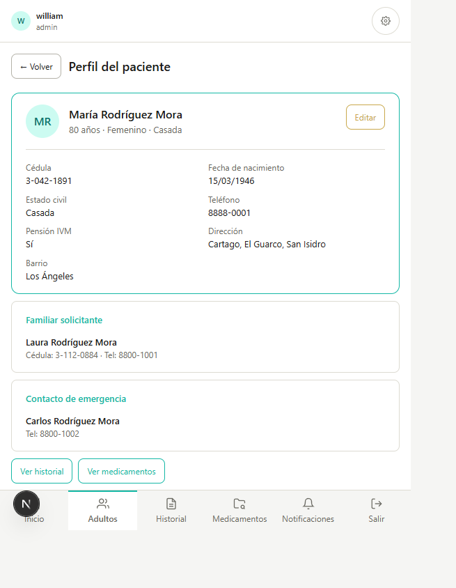
Desde "+ Nuevo registro" se abre un formulario vertical pensado para recorrer por secciones.
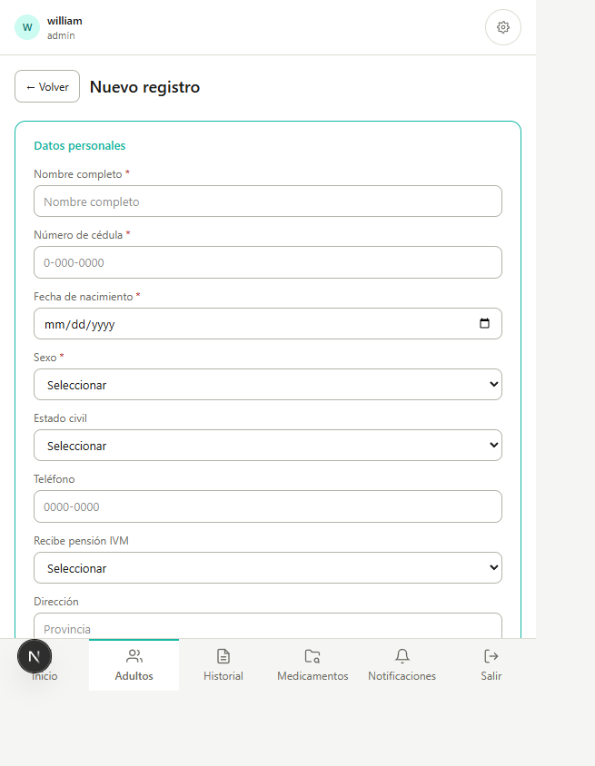
En el modulo Historial primero se selecciona a la persona y luego se muestra la informacion clinica registrada.
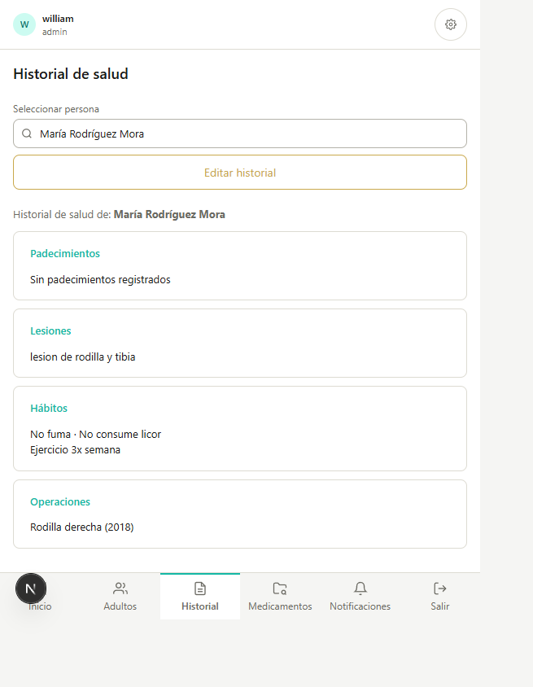
Si tocas "Editar historial", la pantalla cambia a modo edicion para actualizar padecimientos, lesiones, habitos y operaciones.
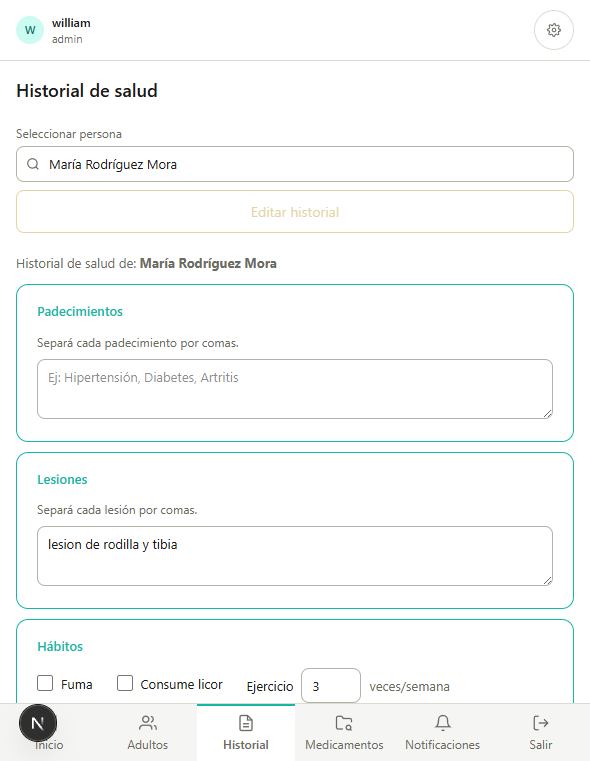
El modulo Medicamentos mantiene la misma logica funcional que en escritorio, pero en celular la informacion se presenta en una sola columna para facilitar la lectura.
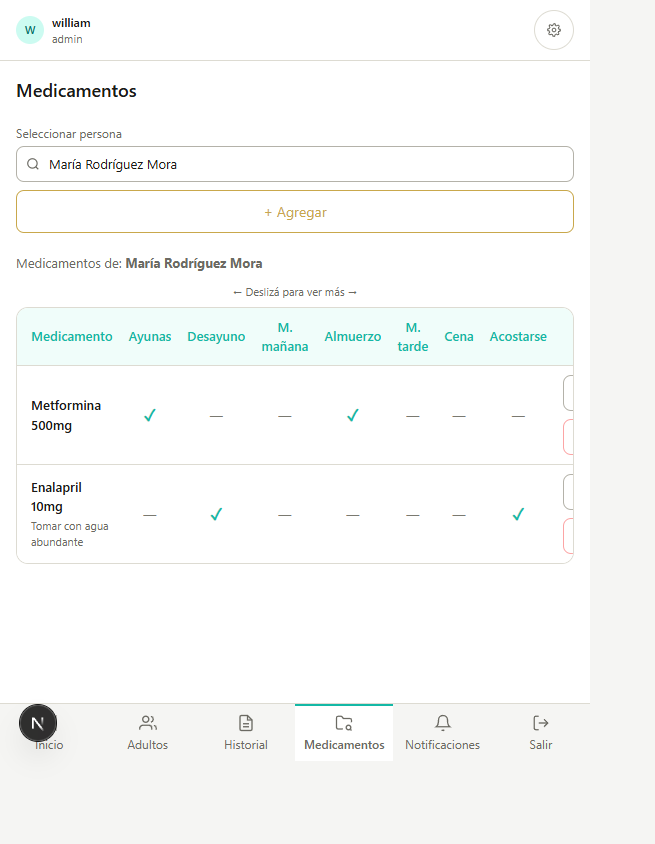
Los usuarios con rol Admin pueden abrir Notificaciones desde la barra inferior. Desde ahi pueden activar, limitar por dias o apagar por completo el envio automatico del correo diario de medicamentos.
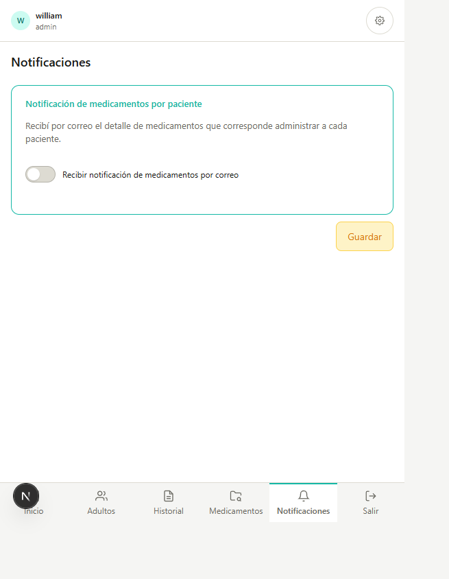
El boton de engranaje del encabezado abre la administracion de usuarios. En movil este mantenimiento se presenta como modal sobre la pantalla actual.
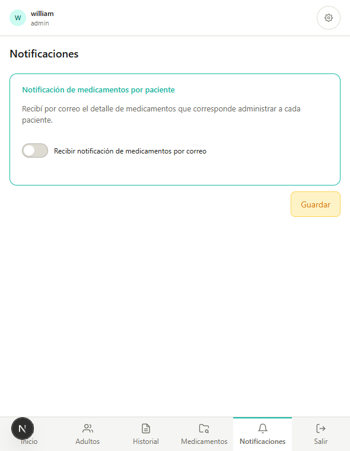
| Funcion | Admin | Colaborador |
|---|---|---|
| Gestionar usuarios | Si | No |
| Configurar notificaciones | Si | No |
| Consultar pacientes, historial y medicamentos | Si | Si |
En celular, la accion Salir se encuentra en la barra inferior. Al tocarla, el sistema pide confirmacion antes de cerrar la sesion.
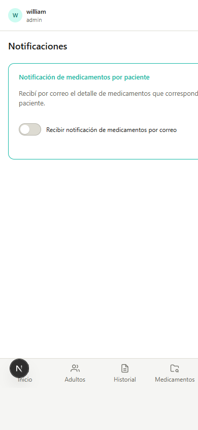